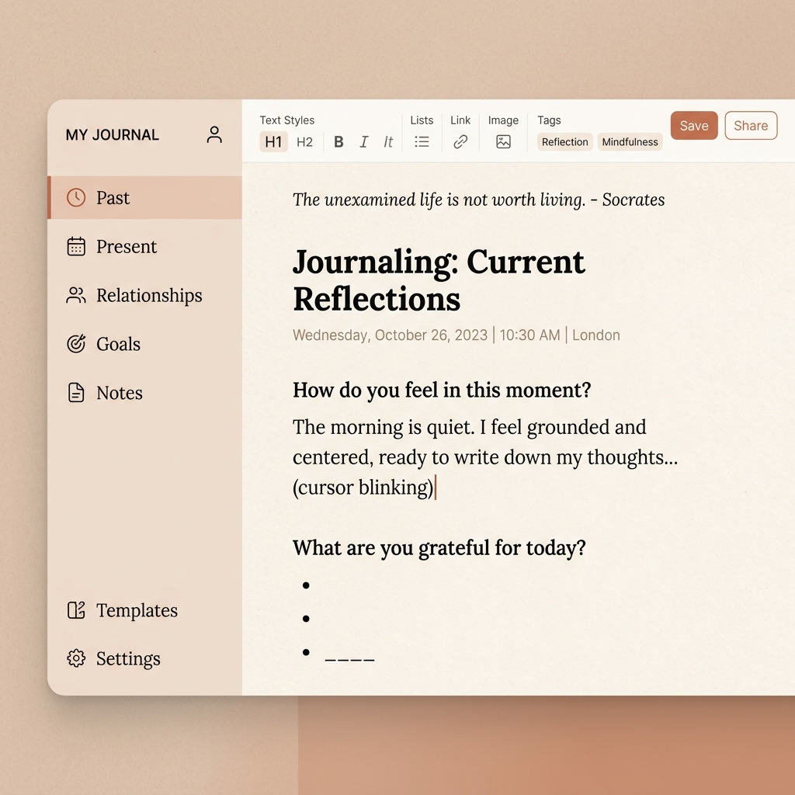

자책은 당신의 잘못이 아니라
뇌의 '생존 본능'입니다
100권의 자기계발서가 주지 못한 명쾌한 해답.
진화심리학과 뇌과학, 그리고 가장 안전한 AI 글쓰기로
나를 객관적으로 분해하고 완벽한 내적 피난처를 만드세요.

이런 고민, 당신만의 잘못이 아닙니다
🤔 과생각의 늪
꼬리에 꼬리를 무는 생각들로 머릿속이 엉망진창입니다. "왜 나는 이 모양일까?" 밤마다 이불을 찹니다.
💔 도돌이표 인간관계
가족, 연애, 친구. 만나는 사람만 다를 뿐 매번 비슷한 갈등으로 끝이 납니다.
🤫 심리상담의 높은 벽
누군가에게 내 깊은 치부를 털어놓는 것이 두렵습니다. 챗GPT에 물어봐도 기계적인 대답만 돌아옵니다.
왜 윤수훈인가요?
지식을 실천으로, 실천을 압도적 성과로 증명했습니다.
시중의 뻔한 책들과
무엇이 다른가요?
1. 단순 위로가 아닌 '과학적 해부'
"다 괜찮아질 거야" 식의 근거 없는 위로를 하지 않습니다. 거울 뉴런, 평판 회로 등 과학적 근거로 내 감정의 원인을 타격합니다.
2. 읽기만 하는 책이 아닌 '실천 시스템'
눈으로 읽고 끝나는 지식은 증발합니다. 제공되는 노션 워크북 템플릿을 통해 21일간 직접 글을 쓰며 내 것으로 만듭니다.
🚨 "AI한테 속마음을 쓰면 유출되지 않나요?"
세상에서 가장 안전한 심리상담실을 구축했습니다. 절대 유출되지 않습니다.
- ✔️ 데이터 학습 방지 세팅법: AI가 내 기록을 무단 학습하지 못하게 차단합니다.
- ✔️ 완벽한 역할 분리: AI는 '질문자' 역할만 합니다. 내밀한 대답은 완전히 격리된 나만의 프라이빗 노션 워크북에만 기록합니다.
당신을 해독할 4주간의 커리큘럼
본편 PDF 180p + 21일 노션 워크북 + 시크릿 프롬프트
어디서 왔는가 (과거 분해)
애착 이론, 부모 투자 이론, 형제 순위와 전두엽 발달의 상관관계
지금 어떻게 사는가 (현재 분해)
자기검열과 평판 회로, DMN 반추 회로가 만드는 자기비판의 늪
누구와 사는가 (관계 분해)
친족 갈등의 이유, 연애에서의 페어본딩, 호혜성과 던바의 수
어디로 갈 것인가 (통합/재설계)
AI 글쓰기 시크릿 프롬프트 실전 적용, 나를 한 문장으로 정의하기
사전 리뷰어들의 생생한 후기
"상담사에게도 말 못 할 치부를 AI와 분리된 노션에 쓰니까 마음이 너무 편했어요. 제가 왜 매번 나쁜 남자만 만나는지 뇌과학적으로 이해하고 펑펑 울었습니다."
"자기계발서 백날 읽어도 제자리걸음이었는데, 내 '뇌'가 원래 이렇게 세팅되어 있다는 걸 아니까 자책감이 사라졌어요. 노션 워크북이 정말 유용합니다."
1장 '과거 분해' PDF 무료 받기
이메일을 남겨주시면 가이드북 1장을 즉시 보내드립니다.
추후 전체 워크북 세트 정식 오픈 시, 사전 신청자분들께만
가장 저렴한 시크릿 특가 링크를 따로 챙겨드립니다.
(정식 오픈 이후에는 가격이 크게 인상됩니다)